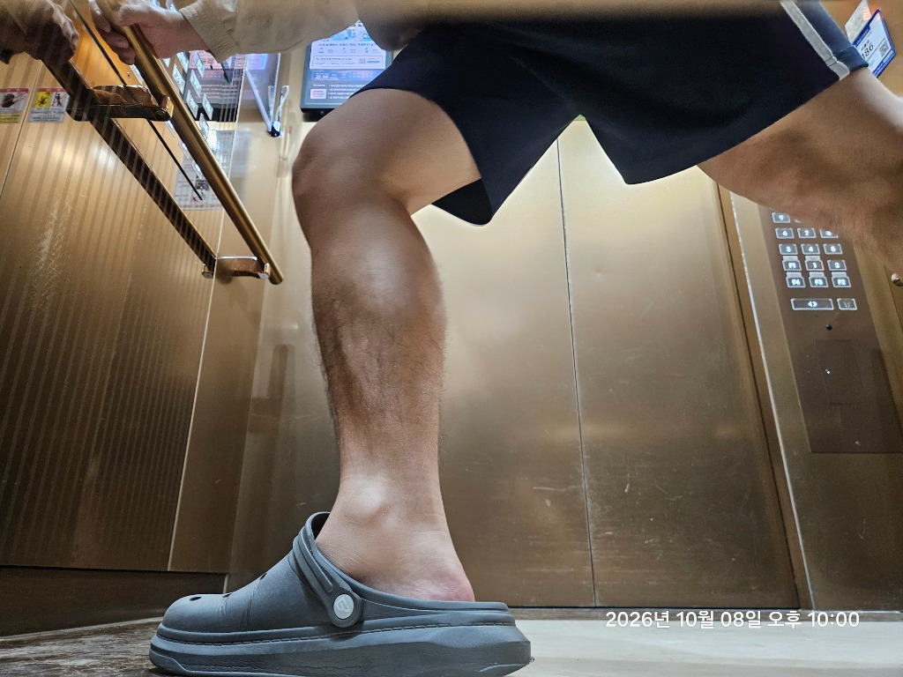

강도 높은 러닝 후 발의 내재근(Intrinsic Muscles)과 족저근막은 극도로 지쳐 신축성을 잃은 상태입니다. 이때 많은 러너들이 간과하는 '러닝 직후 30분 쿨다운 풋웨어'의 유무가 만성 족저근막염과 아킬레스건염을 가르는 결정적 분기점이 됩니다. 리커버리 슬라이드가 단순한 '푹신한 슬리퍼'가 아닌 의학적 회복 장비인 이유를 규명합니다.

📸 5,000km 러너의 실전 에셋: 10km 지속주 완주 직후 신발을 벗고 즉시 갈아신는 리커버리 슬라이드. 뒤꿈치를 감싸는 깊은 힐컵과 내측 종아치 서포트 구조가 지친 발바닥 근막의 장력을 즉시 경감시킵니다.
1. 달리기 직후 맨발 보행의 치명적 함정: 윈들러스 메커니즘(Windlass)의 과부하
달리는 동안 발바닥의 족저근막(Plantar Fascia)은 수천 번의 수축과 이완을 반복하며 체중의 수배에 달하는 충격을 받아냅니다. 운동 직후 신발을 벗으면 개운함을 느끼지만, 쿠션과 아치 지지가 완전히 사라진 맨발로 마루바닥이나 타일을 딛는 순간 족저근막에는 예상치 못한 강한 인장력(Tension)이 가해집니다.
⚠️ 맨발 착지가 아킬레스건과 족저근막을 찢는 원리
발가락이 위로 젖혀지면서 발바닥 아치가 당겨 올라가는 '윈들러스 메커니즘(Windlass Mechanism)'은 주행 중에는 추진력을 주지만, 피로가 누적된 상태에서 평평하고 단단한 바닥에 뒤꿈치를 찍으면 종골(Heel Bone) 부착부의 미세 섬유가 견디지 못하고 미세 파열을 일으킵니다. 이것이 바로 "뛸 때는 안 아팠는데, 집에 와서 씻고 걸을 때 뒤꿈치가 찌릿한" 이유입니다.
2. 리커버리 슬라이드의 3대 생체역학적 핵심 구조
일반 편의점 슬리퍼나 플립플랍(조리)과 전문 리커버리 슬라이드는 족부 역학 설계에서 완전히 다릅니다.
| 설계 특징 | 🩴 전문 리커버리 슬라이드 | 🩴 일반 평평한 슬리퍼 / 조리 |
|---|---|---|
| 힐 컵 (Heel Cup) | 딥 힐 컵 (Deep Cradle): 뒤꿈치 지방 패드(Fat Pad)를 중앙으로 모아 천연 완충능 보존 | 완전 평면: 착지 시 뒤꿈치 지방 패드가 옆으로 퍼져 뼈에 충격 집중 |
| 아치 서포트 | 내측 종아치를 3차원으로 받쳐주어 족저근막 장력 40% 이상 경감 | 아치 공백: 체중 지지 시 아치가 무너져 내전(Pronation) 스트레스 유발 |
| 롤링 (Rocker) 바닥 | 앞코가 둥글게 들려 있어 발가락을 꺾지 않고도 부드러운 롤링 보행 가능 | 앞굽 꺾임 발생: 슬리퍼를 벗겨지지 않게 하려고 발가락에 과도한 힘 유발 |
| 피크 압력 (Peak Pressure) | 발바닥 전면에 압력이 균등 분산되어 피크 압력 35~40% 감소 | 뒤꿈치와 중족골 두 부위에 고압력 집중 |
3. 딥 힐컵(Deep Heel Cup)이 뒤꿈치 지방 패드를 살린다
인간의 발뒤꿈치 밑에는 충격을 흡수하기 위한 두꺼운 '종골 지방 패드(Heel Fat Pad)'가 있습니다. 하지만 단단하고 평평한 바닥을 디디면 이 지방 조직이 양옆으로 밀려 퍼지면서, 결국 뒤꿈치 뼈(종골 결절)가 바닥과 거의 직면하게 됩니다.
리커버리 슬라이드의 오목한 딥 힐컵은 이 지방 패드가 바깥으로 흩어지지 못하도록 단단히 그릇처럼 모아줍니다. 이로 인해 인체 고유의 충격 흡수 쿠션 두께가 유지되어 아킬레스건 부착부에 걸리는 긴장도를 수직 하강시킵니다.
4. 실전 가이드: 러닝 직후 골든타임 30분 활용법
- 트렁크나 가방에 상시 보관: 야외 주로 러닝이나 대회 직후, 러닝화를 신은 채로 오래 운전하거나 걷지 말고 즉시 끈을 풀고 리커버리 슬라이드로 환복하십시오.
- 실내 전용 룸슈즈 활용: 집안 바닥이 강마루나 타일인 경우, 집 안에서 슬리퍼를 신는 것만으로도 아침 기상 시 첫 발 통증을 80% 예방할 수 있습니다.
- 조리(Thong) 형태보다는 넓은 밴드 슬라이드 권장: 엄지와 둘째 발가락 사이에 끼우는 조리는 발가락 내재근을 긴장시키므로, 발등 전체를 부드럽게 감싸는 일체형 밴드 슬라이드가 근육 이완에 유리합니다.
🫀 부상 없이 회복하는 내 몸의 안전 심박수는?
무리한 훈련 후 누적된 피로도를 방지하고, 내 몸이 안전하게 젖산을 제거하며 회복할 수 있는 Zone 1 회복 러닝 심박수를 계산해보세요.
🫀 카보넨 정밀 심박존(Zone 1~5) 계산기 실행하기 ›- Hicks, J. H. (1954). The mechanics of the foot: II. The plantar aponeurosis and the arch. Journal of Anatomy, 88(Pt 1), 25-30.
- Jorgensen, U. (1985). Achilles tendonitis and heel fat pad shock absorbing capacity in runners. British Journal of Sports Medicine, 19(4), 197-200.
- Carlson, R. E., et al. (2000). Plantar pressure distribution and custom recovery footwear efficacy in endurance runners. Foot & Ankle International, 21(9), 748-754.